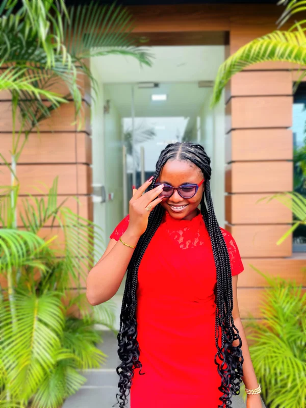
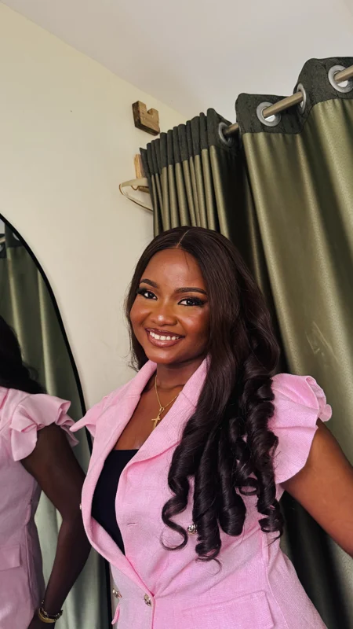
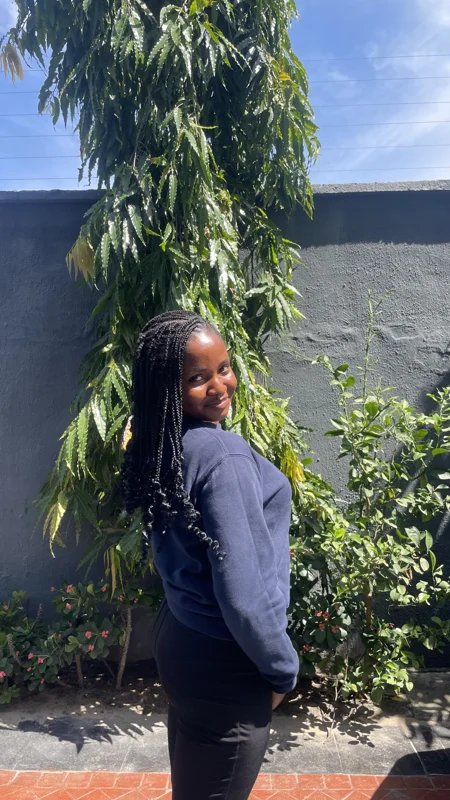
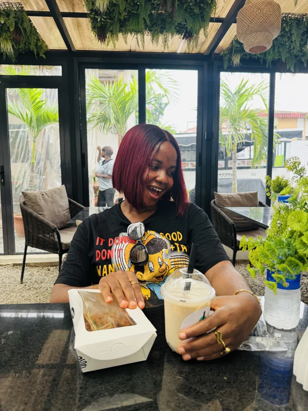
Nice to meet you!
I’m a product designer and design engineer in Lagos, with a love for beautiful interfaces and thoughtful interactions.
I design web and mobile products and brand visuals, and I build them too.
The Journey
I studied Educational Technology at the University of Calabar.
In 2022, curiosity led me to graphic design. Later that year, I joined Tech4Dev’s Women Techsters Fellowship, and my journey into product design began.
I kept learning with I4G × Zuri, Google’s UX course on Coursera and a tech support course, then landed my first internship and full-time roles.
I also volunteered with
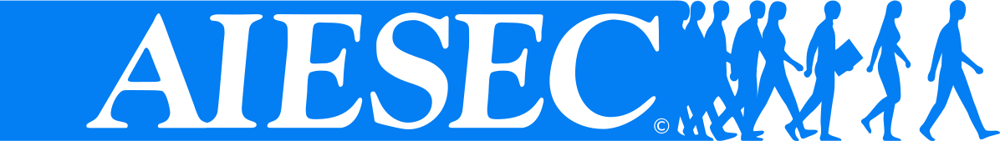
and was a campus ambassador.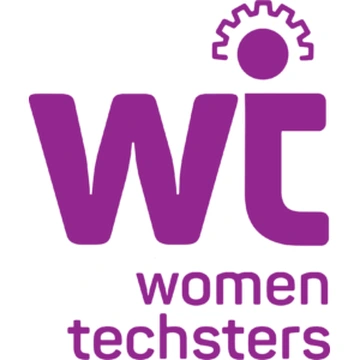
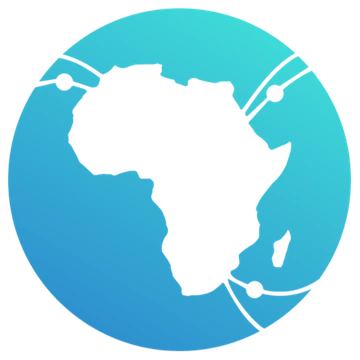
Where I am now
This year, Dev and Design’s Ship and Found bootcamp opened a new direction for me: design engineering.
Now I design in Figma, then build and ship working products with AI tools like Claude, Cursor and Codex, this website included. UX design shapes how they feel as well as how they work.
I’ve also freelanced since 2024. Here are a few selected brands I’ve worked with:
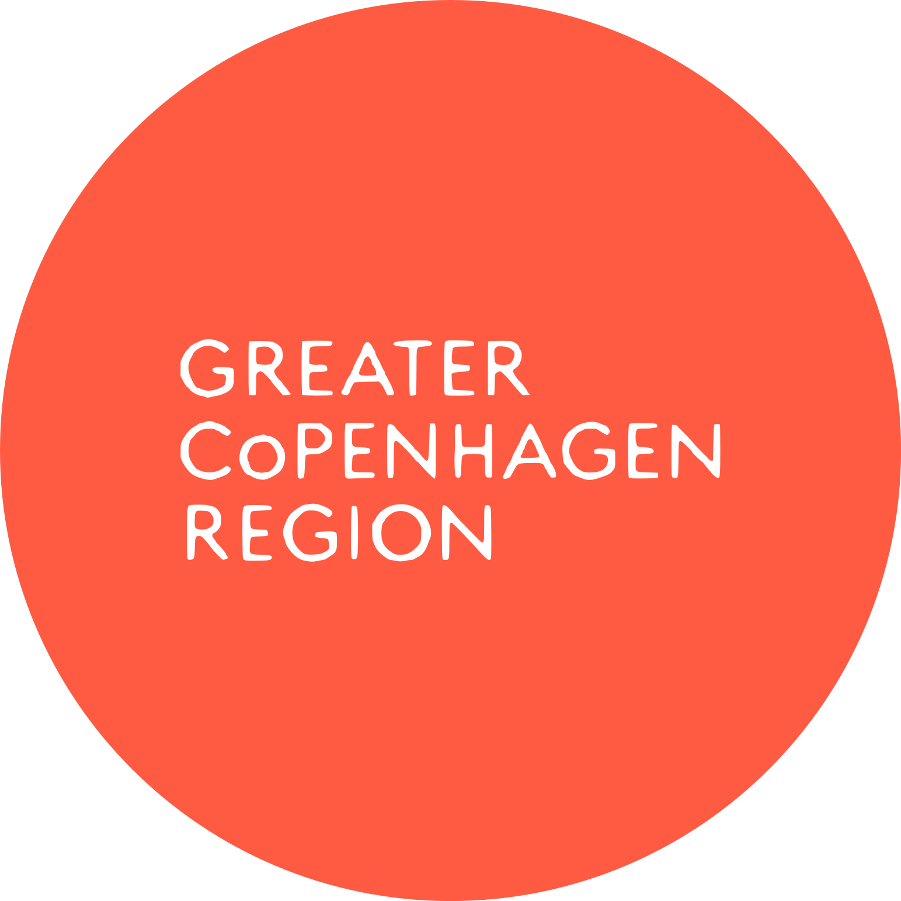
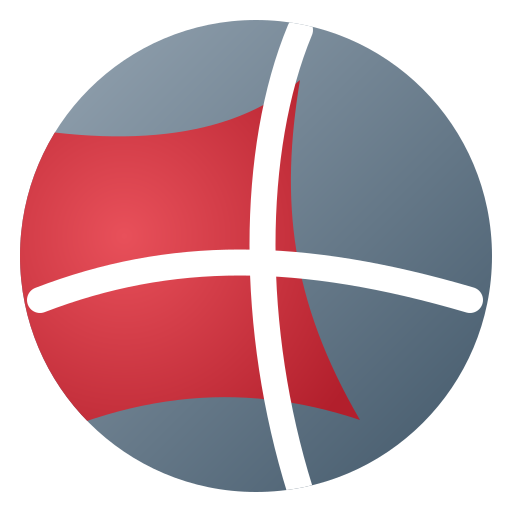
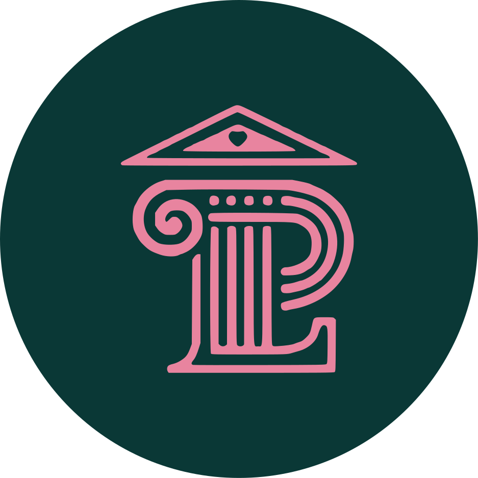
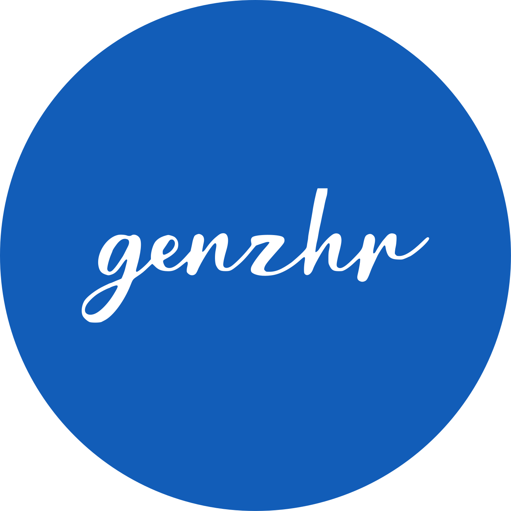
Speaking moments
-
2024
Women ICT Training Empowerment Programme
Facilitated digital-skills training for women on the First Lady Senator Oluremi Tinubu’s Renewed Hope Initiative, in partnership with NITDA.
-
2022
International Day of the Girl Child
Spoke to schoolgirls about careers in STEM and why being a girl is never a limit to what they can become.
Randoms
Click and drag to rearrangeTouch and drag to rearrange
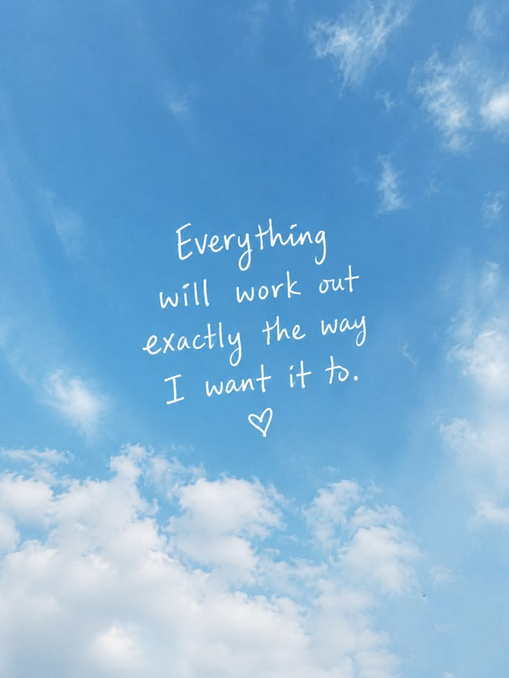
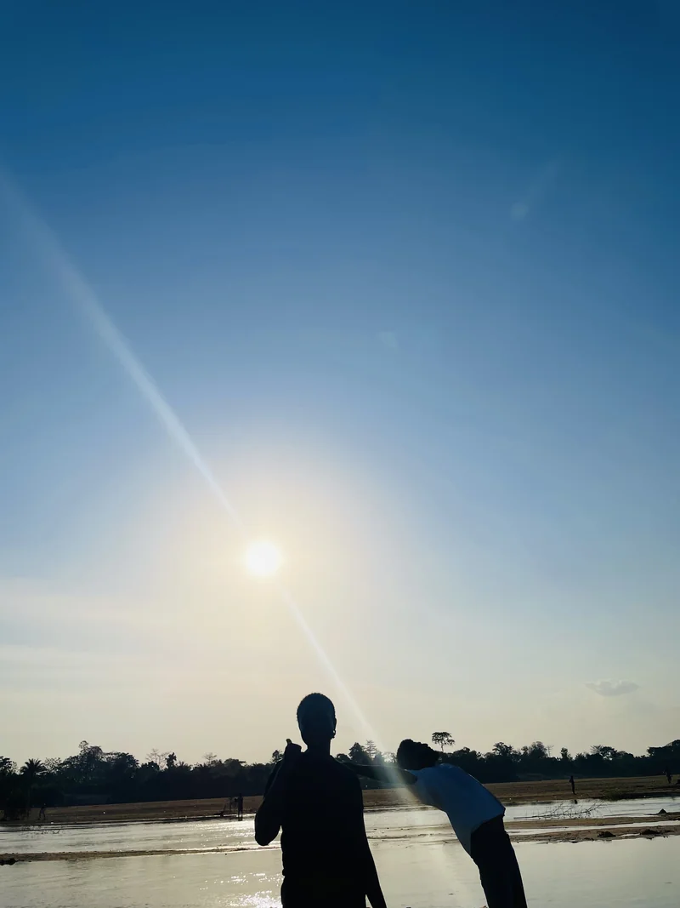
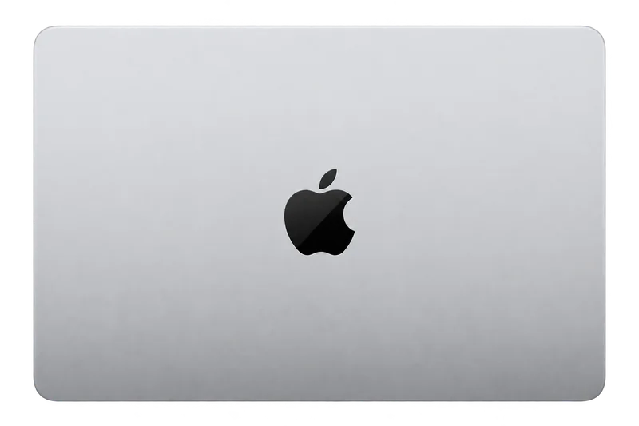
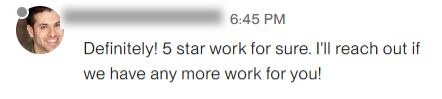
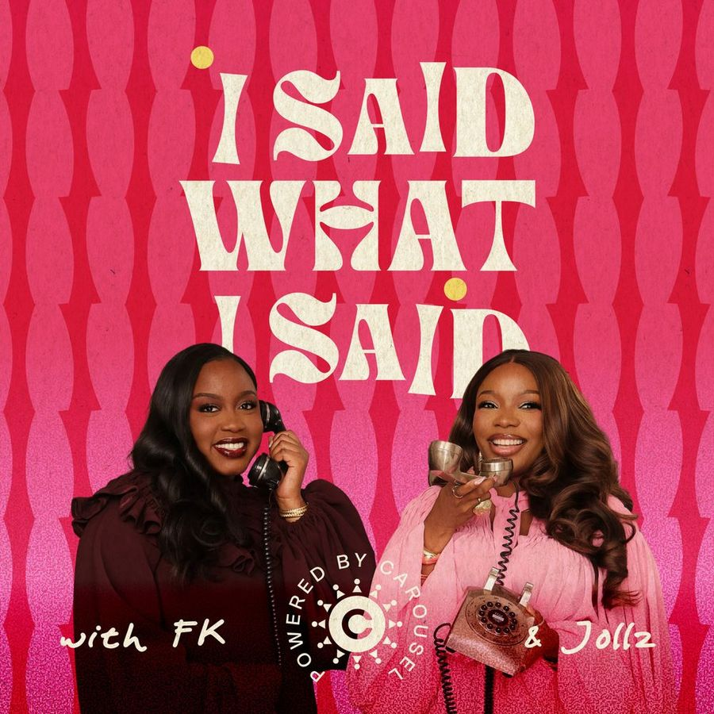
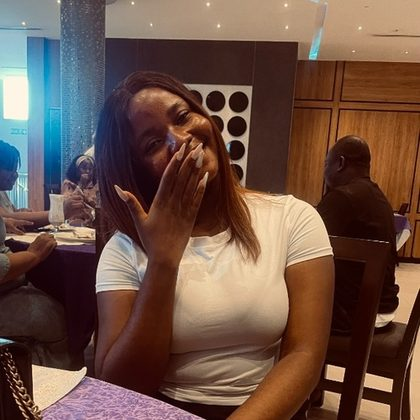
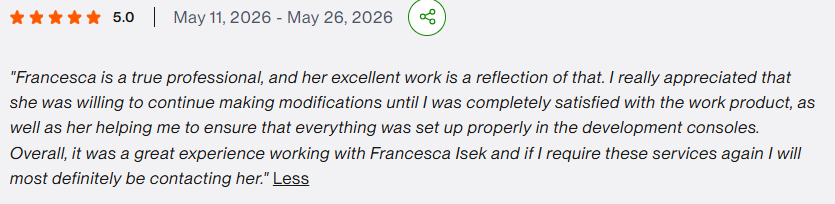
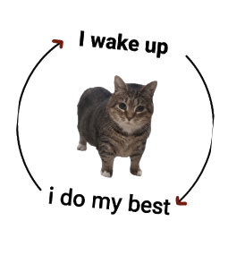
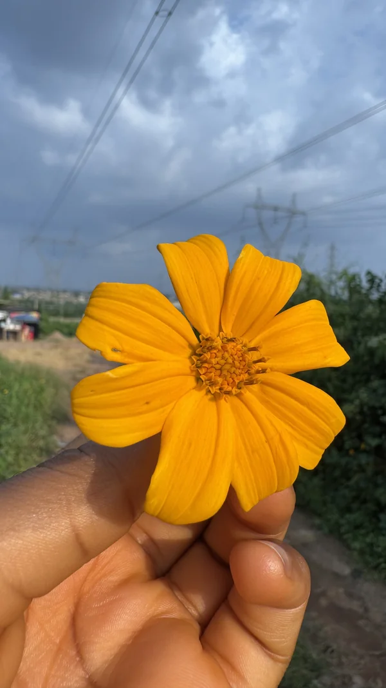
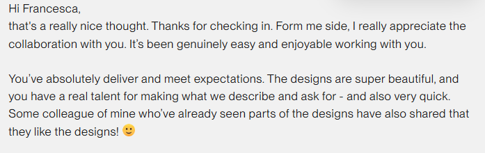
UX Designer
UI DesignerFRANCESCA
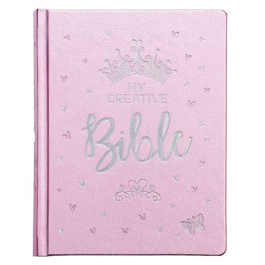
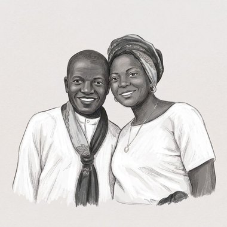
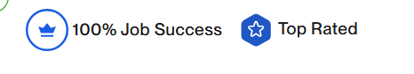